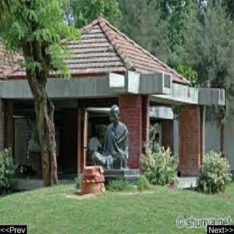

|  |
|
Sabarmati Ashram Sabarmati Ashram is located in the Sabarmati suburb of Ahmedabad, Gujarat, adjoining the Ashram Road, on the banks of the River Sabarmati, four miles from the town hall. Address: Ashram Road, Hridaya Kunj, Old Wadaj, Ahmedabad, Gujarat 380027 Phone: 079 2755 7277 |